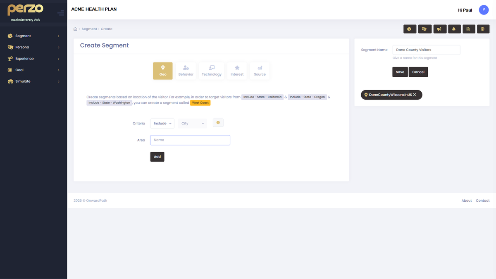
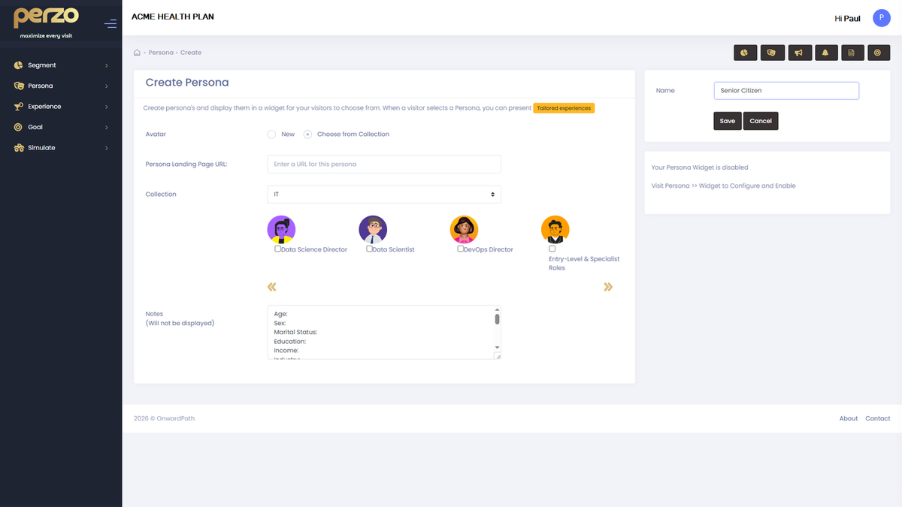

Hero and CTA variants
Replace the default headline and CTA with context-relevant copy for each Segment.
“Checking on your prior authorization? Get a real-time status update — no login required.”
Perzo identifies the intent of anonymous members the moment they arrive and delivers a personalized experience that resolves their need before they reach a live agent.
Hero, CTA and FAQ switch to PA status content on this page load.
When a member arrives at your portal without logging in, your platform has no context: no role, no intent, no history. Every visitor gets the same generic page. The ones who can’t find what they need in seconds don’t dig deeper. They call.
Perzo delivers personalization through two complementary audience models: system-applied Segments that detect intent automatically, and member-declared Personas that capture intent directly. Both activate before login. Neither requires PII.
Perzo evaluates anonymous contextual signals on every page load (referral source, URL path, device type, geographic region, time of visit) and automatically matches the visitor to a pre-configured Segment.

Where signal confidence is lower, Perzo presents a lightweight role-selection prompt. The member identifies their need in a single tap. Declared intent always supersedes inferred signals.

When both a Segment match and a Persona selection occur in the same session, the Persona always takes priority. A member who has declared their intent has provided the highest-quality signal available.
Session persistence is configurable. Your Perzo admin controls whether Persona selections carry forward across visits.
Every anonymous session that resolves via self-service instead of escalating to a live agent eliminates $5–$12 in contact cost. At the scale of a regional or national PBM, even a 10% deflection rate generates millions annually.
| Scenario | Monthly sessions | Deflection | Est. annual savings |
|---|---|---|---|
| No personalization | Any | 0% | $0 |
| Conservative | 100,000 | 10% | $900K – $1.4M |
| Midpoint | 250,000 | 15% | $3.4M – $5.4M |
| Optimistic | 500,000 | 20% | $9M – $14.4M |
Estimates based on $5–$12 cost differential per deflected contact. Replace with your internal data for precise projections.
Content editors configure personalized experiences in the Perzo visual editor: field-by-field overrides for headlines, CTAs, body copy and media, without developer involvement.
Replace the default headline and CTA with context-relevant copy for each Segment.
“Checking on your prior authorization? Get a real-time status update — no login required.”
Surface the most relevant tool above the fold: drug lookup, PA status, EOB retrieval.
Formulary Segment: search tool launches immediately, pre-populated with visit context.
New member visitors get a structured experience: benefits overview, account setup, ID card retrieval.
“Welcome to your benefits. Here’s your member ID and how to find an in-network pharmacy.”
Deliver segment-specific alerts and guidance that match the member’s likely question.
“Prior auth decisions typically take 2–3 business days. Check your status here.”
When a member does escalate, Perzo passes captured context to the handoff so the agent starts with full intent.
Chat pre-filled: “I’m a new member with a question about my formulary.”
Every zone on the page can carry a Segment or Persona-specific variant, independently configured.
FAQ section auto-surfaces the 3 most relevant questions for the matched Segment.
Editor asks AI Assist for a Hero variant
Editor accepts and publishes to the segment. Status: Live
The AI Assist engine receives full audience context (Segment type, Persona, page zone and tone guidelines) before generating a suggestion. Every output is grounded in who the member is.
Generate a headline. Generate a CTA label. Generate body copy. AI Assist works field by field, and editors review and approve each element independently.
The generation prompt enforces your organization’s tone guidelines: clinical accuracy, plain language standards, and regulatory caution for healthcare communications.
What previously took a day to produce, variant copy for three segments across six zones, is drafted in minutes. Editors focus on judgment, not blank-page creation.
Early access organizations receive preferred pricing locked for the life of their contract, plus a dedicated onboarding track designed to reach pilot go-live in 30 days.
No commitment required. We’ll come prepared.